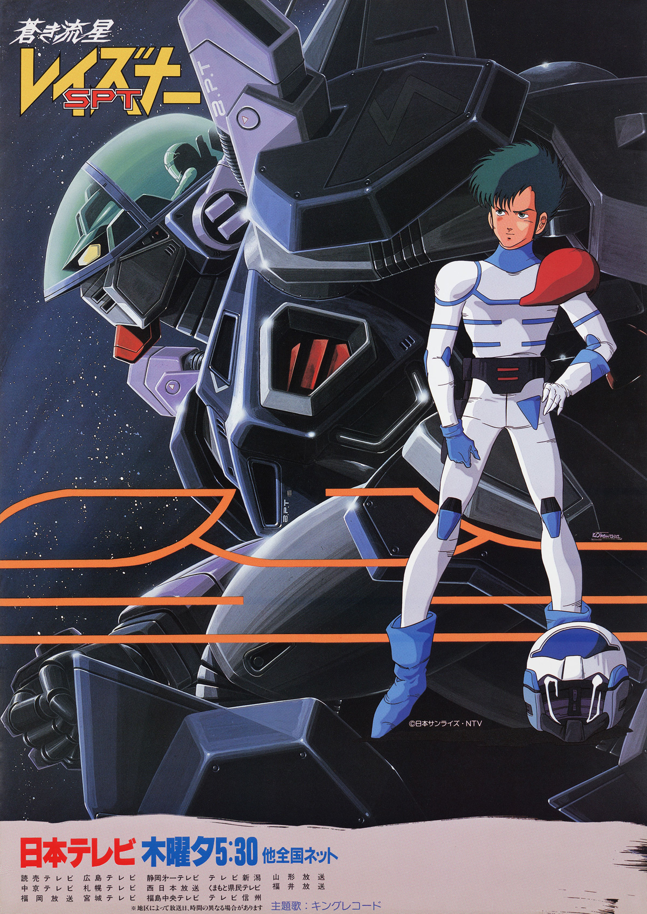
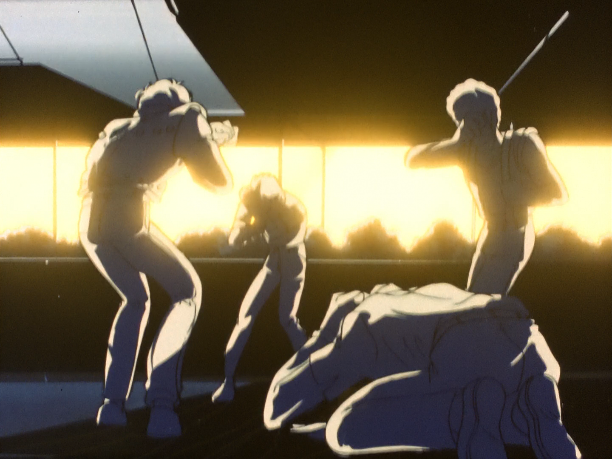
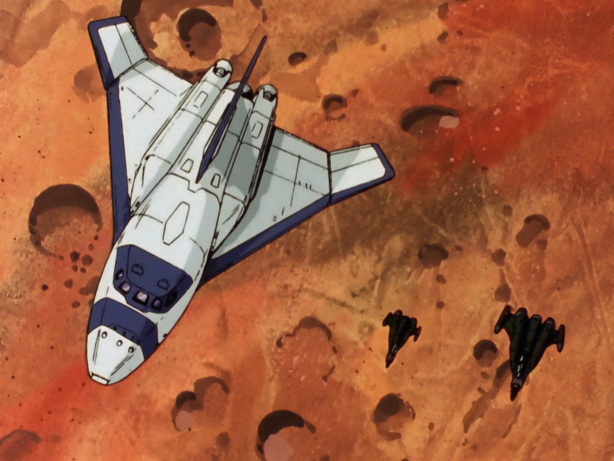
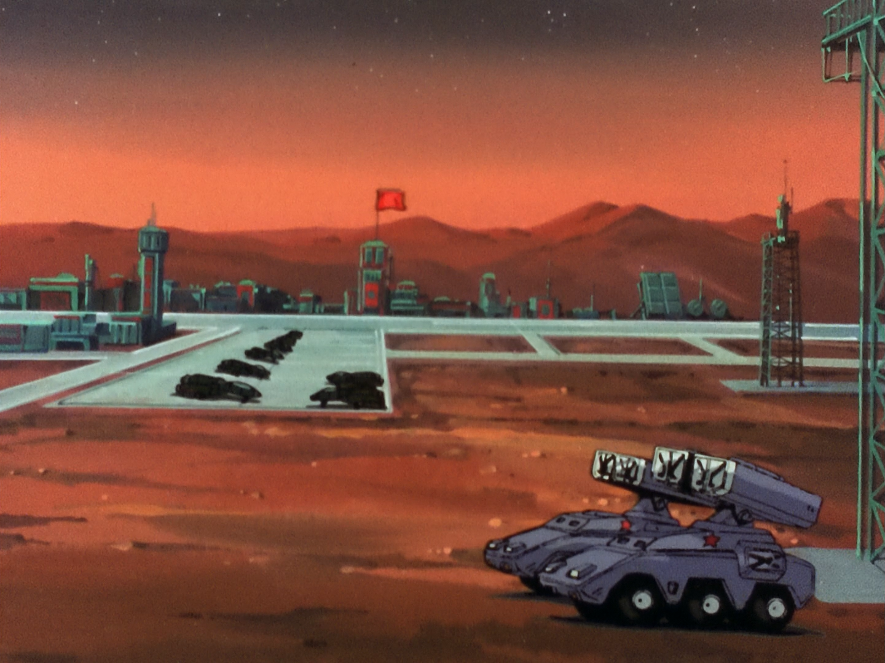
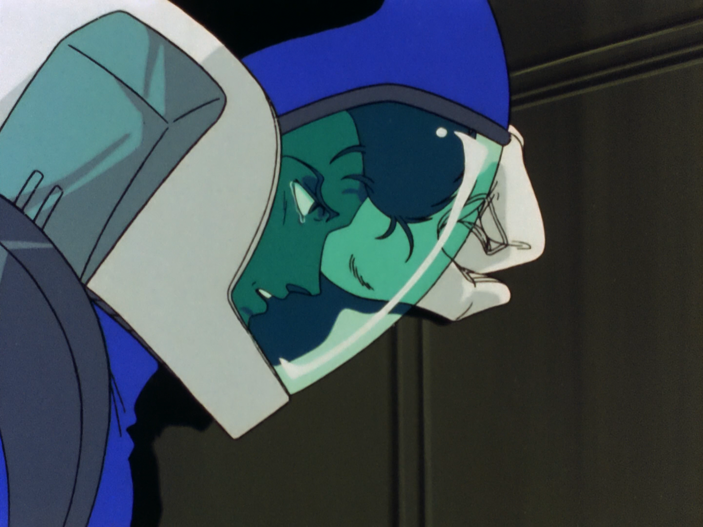
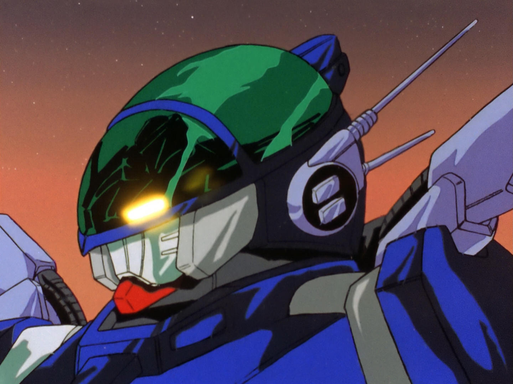
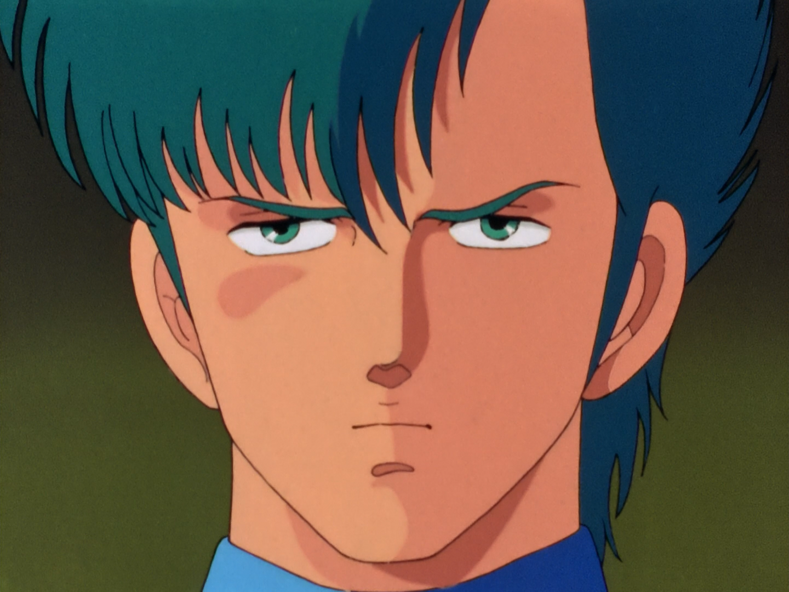

PRODUCTION INFORMATION
BLUE COMET SPT LAYZNER was a show that followed the successful director Ryosuke Takahashi's "always trying something new" policy. This series would mark a direction unlike his previous three series, with FANG OF THE SUN DOUGRAM's gritty, guerilla war drama aesthetic, ARMORED TROOPER VOTOMS pushing that idea even further, and PANZER WORLD GALIENT's medival fantasy story. This series marked his urge to lean towards a more dystopian cyberpunk vibe, and the show ended up airing with little problems initially and gorgeous animation and direction with each episode. However, something unexpected happened.
While other shows from SUNRISE got cancelled due to low ratings or changing market conditions, LAYZNER was unfortunately cancelled due to one of the most bizarre setbacks in anime history. The show's main sponsor was an electric heater company known as "Sanyo Electric," and a fault in their product resulted in a death of an owner. This sudden emergency caused the company to cease funding to the TV Series and to end it early. While there was plenty of episodes meant to be shown, the series was given a second chance through an OVA release and it's rushed climax was given a second life.
Air Date: September 3, 1985 to July 26, 1986
Director: Ryosuke Takahashi
Studio: Sunrise
STORY
In the far distant future year 1996, humans have made it to Mars, and the Cold War is still raging forward. The United States of America and Russia have both set up military bases with nuclear missiles pointed at each other. Into this standoff comes a gaggle of international teenagers called the Cosmic Culture Club, visiting Mars on a UN-sponsored peace gesture.
Suddenly, powerful laser beams strike from orbit, followed by fast, energetic humanoid machines. In a flash, the UN base is devastated and only a handful of survivors gets into spacesuits in time to avoid instant death. They huddle in a safe room, hearing the footsteps of an approaching invader. He enters and removes his helmet. He looks human.
"I come from Grados. My name is Eiji. Earth is under threat."
CAST AND CREDITS
Original Work: Ryosuke Takahashi and Tsunehisa Itou
Direction: Ryosuke Takahashi
Mechanical Design: Kunio Okawara
Character Design: Moriyasu Taniguchi
Soundtrack: Hiroki Inui
Script: Ryosuke Takahashi, Meigo Endou, Tsunehisa Itou, Yasuhi Hirano, Fuyunori Gobo, Hiroyuki Hoshiyama
Animation Direction: Moriyasu Taniguchi, Tadashi Yahata, Makoto Itou, Hiromi Muranaka, Michiyo Sakurai, Fumiko Kishi, Hideyuki Motohashi, Chiharu Satou, Satoru Nakamura, Masahito Sawada
Mechanical Animation Directon: Toru Yoshida and Hiroyuki Okiura
Art Direction: Kazuhiro Arai and Osamu Honda
IMAGE GALLERY





